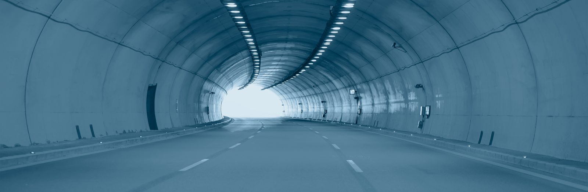
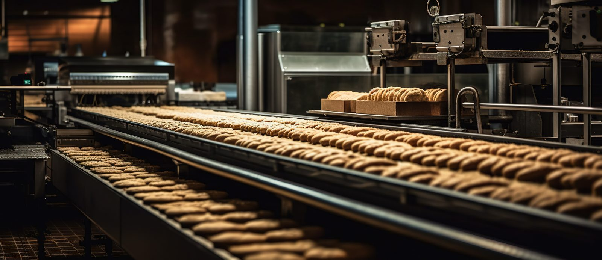
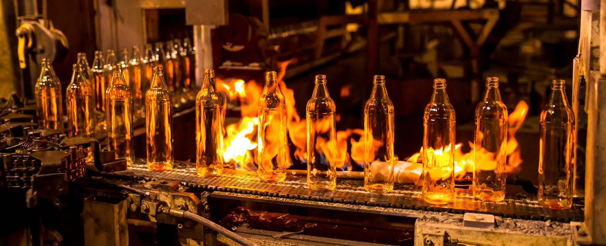
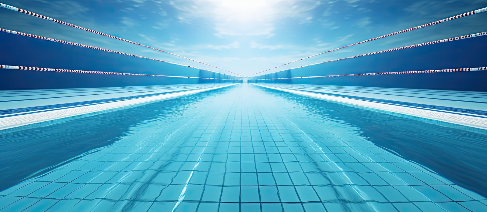
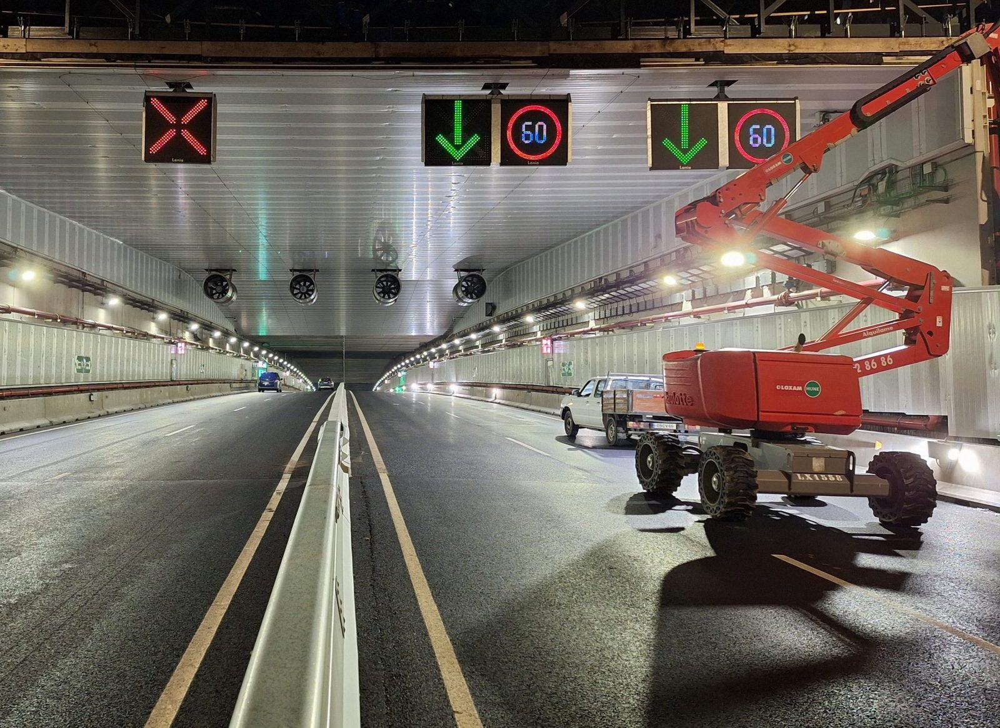
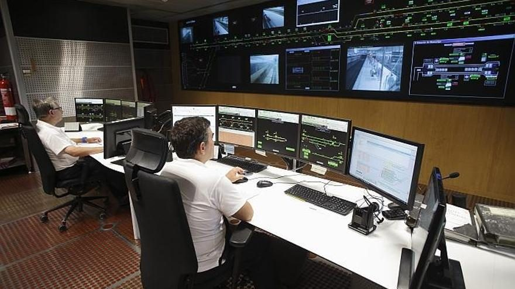
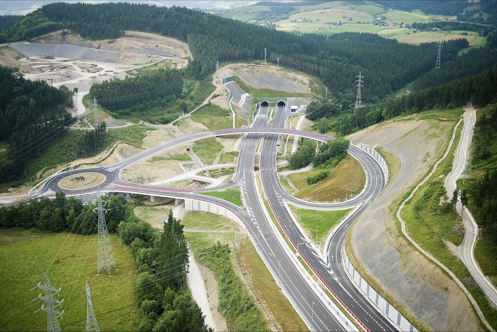
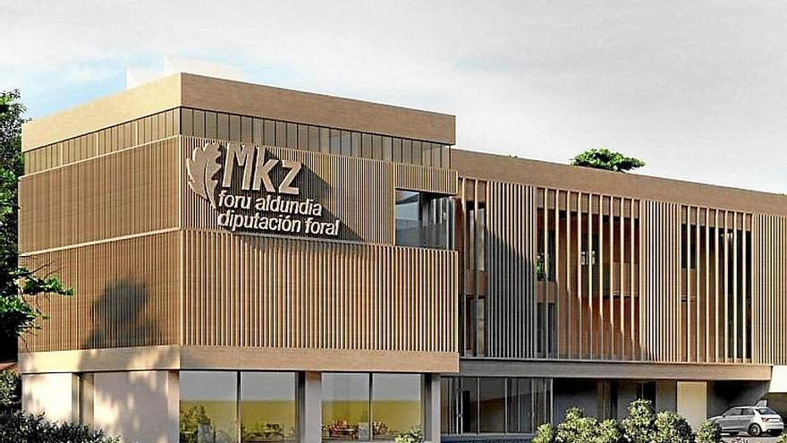
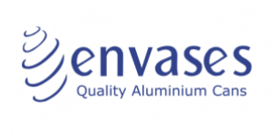

Programación PLC
Desarrollo y migración de software en Siemens S7-300, 400H, 1200, 1500 y 1500H redundante con TIA Portal y Step 7.
Técnico en automatización industrial · Bilbao
Soy Jon, técnico especialista en programación PLC y sistemas SCADA con tecnología Siemens. Experiencia en infraestructura crítica, túneles, centros de control, tratamiento de aguas e industria.
Experiencia
6 añosPlataforma
SiemensUbicación
Bilbao, BizkaiaServicios
Desarrollo y migración de software en Siemens S7-300, 400H, 1200, 1500 y 1500H redundante con TIA Portal y Step 7.
Supervisión en tiempo real con WinCC OA, WinCC Unified y WinCC V7. Alarmas, históricos e informes.
Redes Profinet, Profibus, Modbus TCP, OPC-UA, IO-Link y MQTT. Conectividad segura entre planta y oficina.
Sustitución de arquitecturas obsoletas minimizando paradas de producción y garantizando la continuidad del servicio.
Arquitecturas de alta disponibilidad con S7-400H y S7-1500H para instalaciones que no pueden parar.
Pruebas FAT/SAT, puesta en servicio, formación a operadores y mantenimiento evolutivo de sistemas existentes.
Proyectos

Migración completa a S7-1500H redundante con retirada de arquitectura legacy S7-300/400H. Implementación WinCC OA para monitorización en tiempo real.
Integración multiprotocolo sobre arquitectura híbrida S7-1500/1200/400/300. Control de reactor biológico secuencial con flotación por aire disuelto (DAF).

Automatización de líneas de bollería industrial con S7-1500 y HMI Comfort Panel. Trazabilidad y control de calidad en tiempo real.

Control de precisión de bombas con S7-1200, comunicación segura IPSec y switch industrial Scalance 3G.

Recirculación y tratamiento de agua con S7-1200: caudales, dosificación química y gestión energética.

Mantenimiento integral del SCADA WinCC OA: ventilación, iluminación y sistemas de seguridad.

Modernización de instalaciones de estaciones con sistemas de aparcabicicletas inteligentes.

Migración del PLC redundante S7-400H a S7-1500H en el túnel. Mantenimiento evolutivo del SCADA de supervisión vial e integración de nuevos dispositivos.

SCADA para la red viaria provincial: monitorización 24/7 de túneles y sistemas ITS con respuesta en tiempo real.
Proceso
Visito la instalación, reviso la documentación existente y definimos juntos los requisitos. Si ya los tienes definidos, parto directamente de ellos para programar.
Arquitectura de control, programación PLC y SCADA, pruebas en oficina (FAT).
Instalación en planta con el mínimo impacto en producción y pruebas SAT.
Documentación, formación a operadores y mantenimiento evolutivo.
Tecnologías
Clientes
He realizado proyectos para empresas industriales e instituciones públicas como estas.

PackagingContacto
Cuéntame qué necesitas y te respondo en menos de 24 horas laborables.
Bilbao, Bizkaia
Escríbeme directamente
cv@elprogramador.es
Se abrirá tu programa de correo. Si usas el correo desde el navegador, copia la dirección.